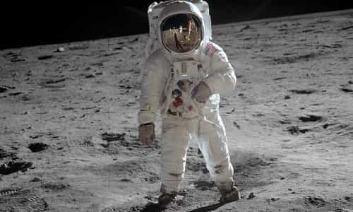
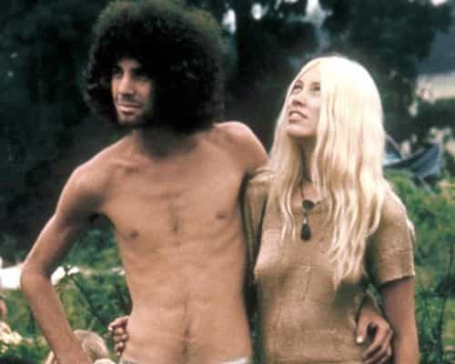
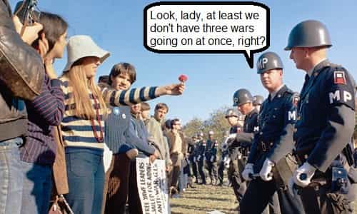
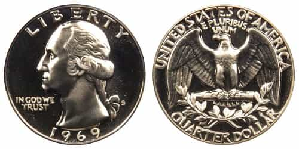
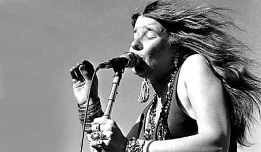
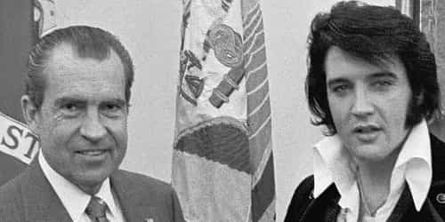

< < < Back
7 Reasons Why 1969 Was An Awesome Year For America – Return Of Kings
We often think of the late 1960s as a time of turmoil and strife. In many ways it was. The Cold War was still going on. There were race riots and other forms of civil unrest happening. Cultural changes were being unleashed, leading to just about everything wrong with how things are today. Even so, the snowball had just started rolling; recent events and conditions make the late 1960s seem innocent and charmed in perspective.
I hereby nominate 1969 as the best of those years. It wasn’t all bunnies and roses (the Manson murders kind of threw cold water on the decade of peace and love, for one thing) but I’m going to focus on the positive here. Looking back forty seven years later, things were pretty good, all told.
7: Apollo 11

Definitely no green cheese here.
On July 24, the USA won the space race and landed on the moon, a triumph of engineering and a first like no other. Later that year, we did a repeat performance on November 14. After the Apollo missions were cancelled, this feat has never been attempted again thus far. What could have resulted if we had kept up the tempo on space exploration will be a great “might have been” in history.
6: The women were cute and friendly

Normally I don’t AMOG, but sometimes the situation demands it.
The hair was long, and the skirts were short. Figures were trim on average. Altogether, the women of the 1960s had a certain unique charm. Although feminism had metastasized into the Second Wave by then, much of the public hadn’t yet been poisoned by their propaganda memes. They didn’t have unrealistic expectations either; they were down to earth. Finally, a dinner date was a quid pro quo, not an interview.
5: We only had one spit-in-your-eye war going on

Always look on the bright side of life.
The Vietnam War was a dragged-out affair. It’s one of those things we ask ourselves, “Why did we bother getting lassoed into that in the first place?” Still, things were just beginning to wind down in 1969, a de-escalation process that concluded with the Paris Peace Accords in 1973. After the North Vietnamese pinky-swore with Henry Kissinger to a mutual withdrawal, there was peace. That is, until March 10, 1975 when Hanoi delivered a Shit Test, but all that’s another story. As for recent times, the USA ends up getting lassoed into multiple spit-in-your-eye wars simultaneously. Really, one at a time is more than enough.
4: Television was okay

It wasn’t quite as bad, way back when
TV isn’t exactly the height of culture, but back in the day it was fairly original, not too terribly bad overall. The “Rural Purge” hadn’t yet happened, so hits like Green Acres, Hee Haw, Petticoat Junction, and The Beverly Hillbillies were still running. Other than that, I Dream of Jeannie was in its fifth and final season (though by then they censored Barbara Eden’s cute navel). Dragnet, Hawaii Five-O, and Bewitched were still putting out new shows. None of that was exactly Shakespeare, but hey… Star Trek TOS finished its final run. I do have some quibbles with their preachy social messages. Still, I’ve got to hand it to them for doing all they did with a limited special effects budget; they had to be creative. You can enjoy lots of the above cheesy classics today if you have a cable subscription for your idiot box.
3: The economy was pretty good

Twenty five cents in 1969 is equivalent to $1.64 in 2016.
For the most part, 1969 was a good year. However, inflation was nosing up a bit, and the stock market was slowing down. A recession began in December. The worst that happened, which played out in 1970, was a 6.1% unemployment rate at the highest. These were the days before they were dummying up the statistics to make the government look better. It was all over in exactly a year. They sure don’t make recessions like they used to! Come to think of it, didn’t Obama say he’d fix the economy in his first year in office? It still makes me laugh thinking of all the rubes who believed that one! He also said he’d cut the deficit in half in his first year. Maybe The Lightworker meant to say “double” rather than “half”—oopsie!
2: The music was great

I sure hope the Lord gave you that Mercedes-Benz in heaven. Peace forever, Janis.
The rock and roll of the late 1960s was legendary. For the sake of brevity, I’ll hit a few highlights for 1969 at random. The first Woodstock concert was held, of which almost all the performers are well-known to this day. Santana cut their first record. Creedence Clearwater Revival issued three albums. British acts were quite popular with American audiences as well; Pink Floyd was bursting into brilliance, the Beatles were still going strong, it was the middle of the golden age of the Rolling Stones, and Led Zeppelin released their debut album. Country & Western was doing quite well too. As for rap music, the performers either were kids or didn’t yet exist, and it would be another fifteen years before their sonic blight began to make America more vibrant.
1: We had a real President

All too often, we don’t appreciate what we have until it’s too late.
On January 20, Richard Nixon took office, one of the most effective yet underrated Presidents ever. Although history knows him as the guy who got caught, this was back in the good old days when the reporters actually did their jobs and called out Presidents for things like using the IRS to punish their opponents. These days, the media played “see no evil” over the Fast And Furious scandal; Watergate was small potatoes compared to that. With our recent batch of Presidents, Tricky Dick just keeps looking better.
 If you like this article and are concerned about the future of the Western world, check out Roosh's book Free Speech Isn't Free. It gives an inside look to how the globalist establishment is attempting to marginalize masculine men with a leftist agenda that promotes censorship, feminism, and sterility. It also shares key knowledge and tools that you can use to defend yourself against social justice attacks. Click here to learn more about the book. Your support will help maintain our operation.
If you like this article and are concerned about the future of the Western world, check out Roosh's book Free Speech Isn't Free. It gives an inside look to how the globalist establishment is attempting to marginalize masculine men with a leftist agenda that promotes censorship, feminism, and sterility. It also shares key knowledge and tools that you can use to defend yourself against social justice attacks. Click here to learn more about the book. Your support will help maintain our operation.
Read More: Hillary And Bill Clinton Are Criminal Masterminds Wielding Incredible Power